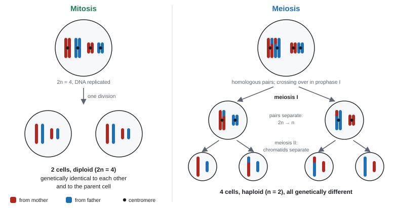
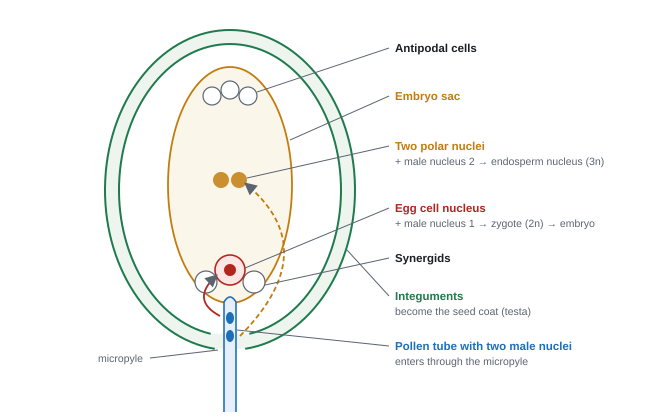
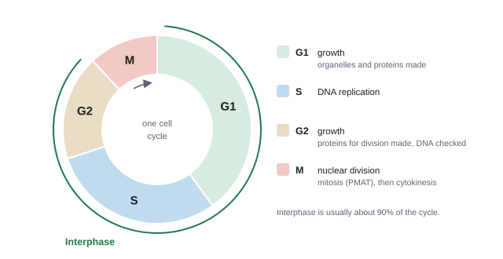
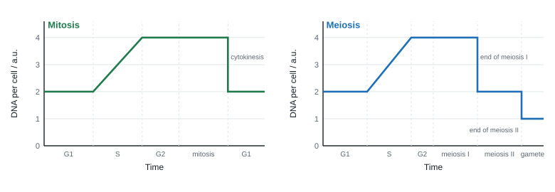
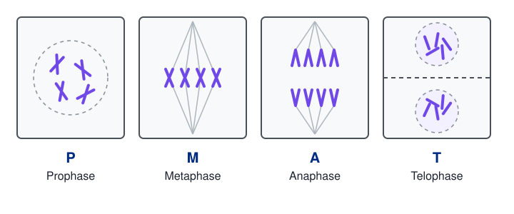
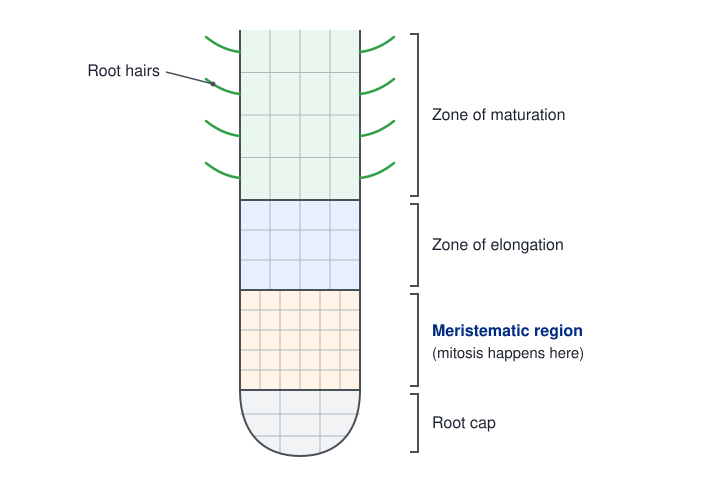

Mitosis, meiosis and reproduction
Cells divide for two reasons: to make identical copies for growth and repair, and to make gametes for sexual reproduction. This page covers linkage, meiosis and the variation it creates, how gametes are built and fuse in mammals and flowering plants, the cell cycle and mitosis, the root tip squash and the mitotic index.
Spec3.9Gene loci and linkage
(i) Know that a locus is the position of a gene on a chromosome. (ii) Understand linkage of genes on the same chromosome.
Key words
- Gene: a section of DNA that codes for a polypeptide.
- Allele: an alternative form of a gene (a different base sequence at the same locus).
- Locus: the position of a gene on a chromosome. Each gene has a fixed locus.
- Homologous chromosomes: a pair (one from each parent) with the same genes at the same loci, though they may carry different alleles.
Linkage
- Genes whose loci are on the same chromosome are linked: they tend to be inherited together, because they move into the gametes as one unit in meiosis. They don't assort independently.
- Linked alleles can be separated only by crossing over between non-sister chromatids of homologous chromosomes in prophase I (3.10). Gametes with the new combinations are recombinants.
- Crossing over is rare at any one point, so recombinants are always fewer than the parental types.
- The closer two loci are, the less likely a crossover falls between them, so the more tightly they are linked.
- Sex linkage (Unit 1) is a special case of linkage: genes on the X chromosome are inherited together with sex.
gametes from linked genes
A parent is AaBb. One chromosome carries A and B; its homologue carries a and b.
If the genes were on different chromosomes: four gamete types, 25% each.
Linked, with crossing over between them in 10% of gametes:
- AB 45% and ab 45% (parental types: linkage kept)
- Ab 5% and aB 5% (recombinants: made by crossing over)
The more the results depart from 25% each, the closer the loci.
- Locus: "{location / position} of a {gene / allele} on a chromosome" (chromatid accepted).
- Allele: "an alternative form of a gene".
- Linkage: "the genes are on the same chromosome" and "have a higher chance of being inherited together / not separated by crossing over". Stopping at "same chromosome" loses the second mark.
- Closer loci: "alleles are closer together, therefore crossing over between them is less likely".
- Gamete data (not 25% each): "(due to) linkage"; "A and B on the same chromosome"; "AB and ab inherited together"; "Ab and aB formed by crossing over" (recombinants).
Often asked as: define locus or allele; explain why two alleles are inherited together more often than others; explain gamete percentages that aren't 25%; decide which genes are linked from chromosome data.
Writing about dominance, mutation or independent assortment when linkage is asked.
Crossing over between different chromosomes (e.g. chromosome 1 and chromosome 4). It happens only between homologous chromosomes.
Confusing locus with chiasma, centromere or centrosome. Using "gene" when you mean "allele".
- Working out which recombinant combinations a single crossover can make across three loci (WBI12 Jun 2021).
- Linked and unlinked genes together: two genes on chromosome 1 are linked and inherited together; a third on chromosome 4 assorts independently of both (WBI12 Jun 2022).
Spec3.10Meiosis and genetic variation
Understand how meiosis makes genetically different gametes, through independent assortment of chromosomes at metaphase I and crossing over between chromatids in prophase I. (You don't need the names of the stages of prophase.)
Why meiosis
- Meiosis is a reduction division: one diploid (2n) cell divides twice to make four haploid (n) cells, each genetically different.
- Halving the number means fertilisation (fusing two haploid nuclei) restores the diploid number every generation.
- Before meiosis, DNA is replicated (S phase), so each chromosome is two identical sister chromatids joined at a centromere.
The two divisions
| Stage | Meiosis I: homologous pairs separate | Meiosis II: sister chromatids separate |
|---|---|---|
| Prophase | chromosomes condense; homologous chromosomes pair up (bivalents); crossing over at chiasmata; nuclear envelope breaks down; spindle forms | chromosomes condense again; new spindles form |
| Metaphase | pairs line up on the equator, each pair's orientation random (independent assortment) | single chromosomes line up on the equator |
| Anaphase | homologous chromosomes pulled to opposite poles; chromatids stay joined | centromeres divide; sister chromatids pulled apart |
| Telophase | two haploid nuclei (each chromosome still two chromatids) | four haploid nuclei |

Source 1: crossing over (prophase I)
- Homologous chromosomes pair up closely.
- Non-sister chromatids (one maternal, one paternal) wrap round each other, break at the same points and rejoin to the other chromatid. The crossing points are chiasmata.
- Sections, and the alleles on them, are exchanged. The chromatids now carry new combinations of alleles (recombinant chromatids).
Source 2: independent assortment (metaphase I)
- Homologous pairs line up on the equator. Whether the maternal or paternal chromosome of each pair faces a given pole is random, and each pair lines up independently of the others.
- So each gamete gets a different mixture of maternal and paternal chromosomes, and so a different combination of alleles.
- Number of combinations = 2ⁿ, where n is the haploid number.
2ⁿ
A fruit fly has 2n = 8, so n = 4: 2⁴ = 16 combinations of chromosomes in its gametes.
Humans: n = 23, so 2²³ = 8 388 608 combinations, before crossing over is even counted.
Random fertilisation: any sperm can fuse with any egg, so one couple could make 2²³ × 2²³ ≈ 7 × 10¹³ different chromosome combinations in a child.
Meiosis v mitosis
| Mitosis | Meiosis | |
|---|---|---|
| Number of divisions | one | two |
| Cells made | two | four |
| Chromosome number | stays the same (2n → 2n) | halved (2n → n) |
| Genetic make-up | daughters identical to each other and to the parent | daughters all different |
| Homologous chromosomes pair? | no | yes, in prophase I |
| Crossing over | no | yes, prophase I |
| Metaphase | chromosomes line up singly | pairs line up (metaphase I); singles (metaphase II) |
| Where | body cells: growth, repair, asexual reproduction | making gametes (testes, ovaries; anthers, ovules) |
Read the question's wording. "Offspring" means add random fertilisation. "Separation of chromosomes" means independent assortment only: crossing over earns nothing there. Always say "prophase I" and "metaphase I".
- "Crossing over results in different allele combinations"; "independent assortment results in different combinations of chromosomes / alleles in the gametes". "Gene" for allele is rejected.
- Crossing over: "sections of chromatids exchanged at chiasmata" "between non-sister (maternal and paternal) chromatids". Sister chromatids is rejected.
- Offspring variation: independent assortment, "a mixture of maternal and paternal chromosomes / different combination of alleles", and "random fertilisation" (which gametes fuse is random).
- Egg v body cell: "23 chromosomes / haploid"; "so fertilisation forms a diploid zygote"; different "due to crossing over / independent assortment".
- DNA graph for meiosis: same shape as mitosis to start, then "a further division" so DNA falls in two steps (4 → 2 → 1 a.u.).
- Metaphase of mitosis v meiosis: similarities "chromosomes line up on the equator", "centromeres attach to spindle fibres"; differences "two metaphases in meiosis", "homologous pairs line up in metaphase I but single chromosomes in mitosis", "independent assortment in metaphase I". Full marks need a similarity.
Often asked as: explain how meiosis produces variation; complete a diagram after crossing over; draw the gametes from a given cell; sketch or explain a DNA-content graph; compare metaphase in mitosis and meiosis.
Writing "fusion of egg and sperm cells". It is the nuclei that fuse.
Drawing a mitosis graph for meiosis, or dropping straight from 4 to 1 a.u.
Forgetting random fertilisation when the question says "offspring".
Ignoring the drawing or chromosome number in the question (e.g. "26 chromosomes": half come from each parent).
- Non-disjunction: a pair of chromosomes (meiosis I) or chromatids (meiosis II) fails to separate, so one gamete gets an extra chromosome and another gets none. In Patau syndrome the zygote has three copies of chromosome 13 (WBI12 Oct 2024).
- Hybrid sterility: chromosomes from two different species can't pair up in prophase I, so meiosis fails and no gametes form. "An odd number of chromosomes" isn't credited (WBI12 Jun 2022).
- An error in crossing over inside a gene can create a new allele, or duplicate a gene (WBI12 Jan 2023, Oct 2025).
Spec3.11Mammalian gametes
Understand how sperm and egg cells are specialised for their functions, including the acrosome in sperm and the zona pellucida in the egg.
Sperm: built to swim and to get in
| Feature | How it helps |
|---|---|
| Haploid nucleus (in the head) | fuses with the haploid egg nucleus to make a diploid zygote |
| Acrosome: a vesicle of hydrolytic enzymes (e.g. acrosin) over the front of the head, made by the Golgi | the enzymes digest a path through the zona pellucida |
| Receptors / proteins on the head membrane | bind to the zona pellucida |
| Midpiece packed with mitochondria | aerobic respiration releases ATP for the flagellum |
| Flagellum (tail) of microtubules | beats to make the sperm swim to the egg |
| Small, streamlined, very little cytoplasm | less resistance, so it swims fast; huge numbers can be made |
Egg (secondary oocyte): built to feed the embryo and let in only one sperm
| Feature | How it helps |
|---|---|
| Haploid nucleus | fuses with a sperm nucleus to restore the diploid number |
| Very large, with lots of cytoplasm: lipid droplets, protein, mitochondria, ribosomes | nutrients and ATP for the early embryo until it implants |
| Zona pellucida: a thick layer of glycoprotein just outside the cell surface membrane | sperm bind to receptors in it (which sets off the acrosome reaction); after fertilisation it hardens to keep other sperm out |
| Cortical granules: vesicles of enzymes just under the membrane | released in the cortical reaction (3.12) to harden the zona |
| Follicle cells (outside the zona) | protect the egg |
- A human egg is about 0.1 mm across, visible to the naked eye; a sperm head is only about 5 µm long.
- Many sperm, few eggs: most sperm never reach the egg, and they compete to fertilise it.
- Mitochondria: "aerobic respiration", "provide ATP", "to move the flagellum". "Produce / make energy" is not accepted.
- Flagellum: "rotates / moves the sperm"; streamlined shape "reduces resistance".
- Longer flagellum or faster sperm: "swim faster", "increased chance of fertilising the egg", "competition with sperm from other males". "First to reach the egg" alone is ignored.
- Sperm head: "haploid nucleus, so a diploid zygote forms"; "acrosome contains enzymes to digest the zona pellucida".
- Egg: "haploid"; "lipid droplets as a source of energy / ATP"; "cortical granules / zona pellucida, which prevent polyspermy"; "more cytoplasm / named organelles". "Food store", "make energy" and "jelly coat" are ignored.
- Sperm drawing: acrosome, nucleus, midpiece with mitochondria, flagellum.
Often asked as: explain the role of the mitochondria or flagellum; draw and label a sperm; suggest why a species has longer sperm; explain how the egg is adapted; why the egg is so much larger than the sperm.
"Produce energy." Use "release / provide ATP".
Saying "reach the egg" when the mark needs "fertilise the egg". Offering a haploid nucleus as an adaptation for swimming.
Placing the zona pellucida inside the cell membrane. Describing a feature without saying how it helps.
- Sperm contain DNA in both the nucleus and the mitochondria; the acrosome's enzymes are coded by nuclear genes (WBI12 Jun 2019, Oct 2019).
- Acrosin is the enzyme in the acrosome (WBI12 Jan 2024).
- Eggs release chemicals that attract sperm, and have surface glycoproteins that bind them (WBI12 Oct 2021).
- Lipid droplets in large fish eggs supply energy for the developing embryo (WBI12 Jan 2023).
Spec3.12Fertilisation in mammals
Know the process of fertilisation in mammals: the acrosome reaction, the cortical reaction and the fusion of nuclei.
The sequence
- Sperm are deposited near the cervix and swim through the uterus into the oviduct, where the egg is. Chemicals released by the egg attract them.
- A sperm passes between the follicle cells and reaches the zona pellucida.
- Acrosome reaction: the sperm head binds to receptor glycoproteins on the zona. The acrosome fuses with the sperm's membrane and releases its hydrolytic enzymes (acrosin). The enzymes digest a path through the zona pellucida, and the sperm swims through.
- The sperm's cell membrane fuses with the egg's cell surface membrane, and the sperm nucleus enters the egg.
- Cortical reaction: sperm entry triggers a rise in Ca²⁺ in the egg. Cortical granules move to the egg membrane, fuse with it and release their enzymes (exocytosis) into the zona. The zona pellucida hardens and its sperm receptors are altered, so no other sperm can bind or enter. This prevents polyspermy and keeps the zygote diploid.
- The egg (a secondary oocyte) now completes meiosis II.
- The haploid sperm nucleus and haploid egg nucleus fuse, forming a diploid zygote (2n = 46 in humans). This fusion of nuclei is fertilisation. The zygote then divides by mitosis (3.17).
Don't mix up the two reactions
| Acrosome reaction | Cortical reaction | |
|---|---|---|
| Whose? | the sperm | the egg |
| Trigger | sperm binding to the zona pellucida | a sperm entering the egg |
| Vesicles involved | the acrosome | cortical granules |
| Effect on the zona | digests a path through it | hardens it |
| Purpose | lets a sperm reach the egg membrane | stops more sperm entering (blocks polyspermy) |
- Cortical reaction (3 marks): "cortical granules fuse with the (egg cell surface) membrane and release enzymes"; "zona pellucida hardens / thickens"; "to prevent polyspermy / more than one sperm entering" (so the zygote stays diploid). "Chemicals" is ignored.
- Hardening also "modifies the sperm receptors, preventing other sperm binding".
- Acrosome reaction: "acrosome releases enzymes / acrosin"; "enzymes digest the zona pellucida"; "sperm membrane fuses with the egg membrane (so the nucleus enters)". "Break down / penetrate" without digest is not credited.
- After entry: "fusion of two haploid nuclei to form a diploid nucleus".
- An egg with three nuclei: one egg nucleus + two sperm nuclei (polyspermy, e.g. because the zona was damaged). "Three sperm entered" is rejected.
- Low acrosin activity: the zona is digested more slowly, so fewer eggs are fertilised.
Often asked as: explain the cortical reaction; describe the events after a sperm enters; explain an egg with extra nuclei; interpret data on acrosin, ZP3 or polyspermy; evaluate an IVF technique (6-mark).
Mixing up the acrosome reaction and the cortical reaction.
Leaving out the first step of the cortical reaction: the granules fuse with the membrane and release enzymes. "Toughened outer layer" and "fertilisation membrane" aren't precise enough.
Describing sperm entry when the question only asks what happens after it.
Mixing up a mammal's egg with a plant ovule (there's no triploid endosperm in mammals).
- ZP3 is the zona glycoprotein that sperm bind to. If ZP3 is missing or changed in shape, the sperm can't bind and the acrosome reaction isn't triggered (WBI12 Jun 2025).
- A fast electrical block: the egg's membrane potential changes within seconds of sperm entry, before the zona hardens (sea urchin data, WBI12 Jan 2026).
- ICSI (injecting one sperm directly into the egg) bypasses the zona, so it helps sperm with little acrosin or poor swimming; used in IVF of endangered species (WBI12 Jan 2024).
- Protein fibres (Rab27a) carry cortical granules to the membrane; without them the cortical reaction fails (WBI12 Oct 2025).
Spec3.13Fertilisation in flowering plants
Know how fertilisation happens in flowering plants, from the growth of the pollen tube to the fusion of nuclei.
Pollination comes first, then fertilisation
- Pollination: transfer of pollen from an anther to a stigma. It isn't fertilisation, in the same way that mating isn't fertilisation in a mammal.
- A pollen grain is haploid and contains two nuclei: a tube nucleus and a generative nucleus. There are no sperm cells.
- The ovule (inside the ovary) contains the embryo sac: a haploid egg cell near the micropyle, two polar nuclei in the centre, plus synergids and antipodal cells.
The steps
- The pollen grain lands on a compatible stigma, absorbs water and sugar, and germinates: a pollen tube grows out of it.
- The tube grows down through the style towards the ovary. It secretes hydrolytic (digestive) enzymes that digest a path through the style tissue, and absorbs the products for growth.
- The tube nucleus sits at the growing tip and controls the tube's growth (it holds the genes for the digestive enzymes). The tube is guided by chemicals from the ovule (chemotropism).
- The generative nucleus divides by mitosis to form two male nuclei (haploid). They travel down the tube behind the tube nucleus.
- The tube enters the ovule through the micropyle. The tube nucleus breaks down, the tip bursts, and the two male nuclei enter the embryo sac.
- Double fertilisation:
- one male nucleus fuses with the egg nucleus → diploid zygote (2n), which develops into the embryo;
- the other male nucleus fuses with the two polar nuclei → triploid endosperm nucleus (3n), which divides to form the endosperm, the food store for the embryo.

| Fusion | Product | Chromosome sets | Becomes |
|---|---|---|---|
| male nucleus + egg nucleus | zygote | 2n (diploid) | embryo (the new plant) |
| male nucleus + two polar nuclei | endosperm nucleus | 3n (triploid) | endosperm (food store in the seed) |
After fertilisation the ovule becomes the seed (integuments → seed coat, or testa) and the ovary becomes the fruit.
Recommended practical: factors affecting pollen tube growth
- Make sucrose solutions of different concentrations (e.g. 0, 5, 10, 15, 20%), or keep one concentration and vary temperature.
- Put a drop of each on a cavity slide and dust pollen from the same flower species onto it. Add a coverslip.
- Keep the slides at a constant temperature (e.g. 25 °C) in a humid box.
- After a fixed time (e.g. 30 minutes), measure the length of several pollen tubes with a calibrated eyepiece graticule, or count the percentage of grains that have germinated.
- Repeat at intervals to find the rate of growth; use a mean of many tubes.
Controls: same species and age of flower, volume of solution, temperature, time. Sucrose supplies sugar for respiration and sets the water potential; too high a concentration draws water out of the grain.
- Pollen tube: "(tube) grows (through the style) to the ovary / ovule / embryo sac"; "(by releasing) digestive / hydrolytic enzymes"; "carries the male nuclei / generative nucleus".
- Generative nucleus: "divides by mitosis to form two male (haploid) nuclei". "The generative nucleus fertilises / fuses" is rejected.
- Double fertilisation: "one male nucleus fuses with the egg cell nucleus to form the zygote"; "the other male nucleus fuses with the two polar nuclei to form the endosperm".
- Endosperm "3n / triploid"; embryo cells 2n.
- Tube nucleus: "controls the growth of the pollen tube"; "contains the genes for / controls production of the digestive enzymes". "The tube nucleus fertilises" is ignored.
- Data on a drug: "as the concentration increases, the length of the pollen tube decreases", plus a manipulated figure for "determine".
Often asked as: explain the role of the pollen tube (often 5 marks); the function of the tube nucleus or generative nucleus; why embryo and endosperm cells contain different amounts of DNA; identify structures on an ovule diagram; interpret pollen-tube data.
Saying the generative nucleus fertilises the egg. It must divide by mitosis first; the two male nuclei do the fusing.
"Degenerative nucleus", "the pollen grain moves down the tube", "two sperm cells".
Writing "egg" for "egg nucleus", or leaving out the polar nuclei. Calling the endosperm haploid.
Confusing the tube nucleus with a male nucleus.
- The name double fertilisation, the polar nuclei, the micropyle and the embryo sac are all expected, though the spec doesn't list them (WBI12 Oct 2019, Oct 2020, Jan 2021).
- Why the DNA differs: embryo cells have two sets of chromosomes (one male nucleus + egg), endosperm cells have three (one male nucleus + two polar nuclei) (WBI12 Jan 2024).
- Calcium ions are needed for pollen tube growth; a drug that blocks Ca²⁺ uptake (verapamil) shortens the tubes (WBI12 Oct 2019).
- Strategies that prevent self-fertilisation increase genetic variation but lower the chance of seeds forming (WBI12 Jun 2023, 6-mark).
Spec3.14Mitosis and the cell cycle
Understand how mitosis and the cell cycle produce genetically identical daughter cells for growth and asexual reproduction.
The cell cycle

- Interphase (not part of mitosis): the cell is very active.
- G1: the cell grows, makes proteins (including enzymes for DNA replication) and makes new organelles.
- S: DNA replicates (semi-conservatively), so each chromosome becomes two identical sister chromatids.
- G2: more growth, proteins for division made; the cell checks the DNA has been copied correctly.
- Mitosis: the nucleus divides (prophase, metaphase, anaphase, telophase).
- Cytokinesis: the cytoplasm divides, making two cells.
The stages of mitosis (PMAT)
| Stage | What happens |
|---|---|
| Prophase | chromosomes condense (shorten and thicken) and become visible as two chromatids joined at a centromere; the nuclear envelope and nucleolus break down; centrioles move to opposite poles and the spindle forms |
| Metaphase | chromosomes line up on the equator of the spindle; each centromere attaches to spindle fibres |
| Anaphase | centromeres divide; spindle fibres shorten and pull the sister chromatids to opposite poles, centromere first |
| Telophase | chromatids (now chromosomes) reach the poles and uncoil; a nuclear envelope re-forms round each set; spindle breaks down |
| Cytokinesis | animal cells: the membrane pinches in (a cleavage furrow). Plant cells: a cell plate forms across the middle and becomes the new cell walls |
Why the daughter cells are identical
- In S phase, every chromosome is replicated exactly, so the two sister chromatids are identical.
- In anaphase, the sister chromatids of every chromosome are separated, one to each pole.
- So each daughter cell receives one identical copy of every chromosome: same number (diploid stays diploid), same alleles.
DNA content through the cycle

What mitosis is for
- Growth: a zygote → embryo → adult; meristems in plants.
- Repair and replacement: healing wounds, replacing skin and gut lining cells, blood cells.
- Asexual reproduction: one parent produces genetically identical offspring (clones): budding in yeast and Hydra, runners in strawberries, tubers in potatoes. (Bacteria divide by binary fission, which isn't mitosis.)
time in a phase from a pie chart
A cell cycle lasts 24 hours. On a pie chart, interphase is 300°, mitosis 45° and cytokinesis 15°.
1° = 24 × 60 ÷ 360 = 4 minutes.
Mitosis: 45 × 4 = 180 min = 3 hours. Cytokinesis: 15 × 4 = 60 minutes.
Give the unit the question asks for (hours or minutes).
cells after repeated divisions
One cell divides by mitosis 8 times, every cell dividing each time.
Cells = 2⁸ = 256 (not 2 × 8 = 16).

- DNA graph (4 marks): "DNA content remains constant during G1 / G2 / mitosis"; "DNA content doubles due to DNA replication (S phase)"; "the cell divides"; "producing two diploid, genetically identical daughter cells". "Interphase" alone isn't an explanation.
- Identical cells: "derived from the zygote" (in an embryo); "DNA / chromosomes are replicated"; "each cell receives one identical copy of each chromosome". "Mitosis" alone isn't enough.
- Spindle: "centromeres attach to spindle fibres"; "separation of (sister) chromatids"; each daughter cell gets identical genetic material.
- Drug that stops spindle fibres shortening: "(sister) chromatids cannot be separated" in anaphase.
- Role of the cell cycle: "synthesis of organelles", "increase in cell size", "replication of DNA". It is not a list of mitosis stages.
- Drawing anaphase for 2n = 6: spindle fibres, centrioles, six chromosomes at each pole, no nuclear envelope. Metaphase: each chromosome drawn as two chromatids joined at a centromere, on the equator; drawing a nuclear envelope loses the mark.
- Plant cell just after mitosis: nuclear envelopes and cell plate (new wall) forming.
Often asked as: order or identify stages; draw a stage for a given 2n; explain a DNA-content graph; role of the spindle or centromere; times from a pie chart; evaluate anti-cancer drug data (6-mark).
Describing a graph when "explain" is asked; missing the final mark for why DNA halves (the cell divides).
Drawing 3 chromosomes per pole in anaphase when 2n = 6 (it's 6 at each pole). Drawing anaphase inside a nucleus.
Leaving out DNA replication when explaining why daughter cells are identical.
Describing the stages of mitosis when the role of the whole cell cycle is asked.
- Cancer is uncontrolled mitosis. Drugs that stop spindle fibres working hold cells in metaphase, so they raise the mitotic index of a sample while stopping division (WBI12 Oct 2022).
- Epigenetic marks are copied when DNA replicates, so they pass to both daughter cells (WBI12 Oct 2024; see 3.20).
- Cells of the morula and blastocyst divide by mitosis, not meiosis (WBI12 Jun 2024).
- Error bars on drug data: non-overlapping bars suggest a significant difference (WBI12 Jun 2019).
Spec3.15Core Practical 6: root tip squash
Prepare and stain a root tip squash and use it to observe the stages of mitosis.
Principle
- In a root, cells divide only in the meristem, just behind the root cap (the first 1–5 mm of the tip). That's where you'll see cells in mitosis.
- The tissue must be separated into a layer one cell thick, and the chromosomes stained, so you can see them clearly.
Core practical 6: method in brief
- Grow roots from a garlic clove or onion with its base in water for a few days.
- Cut off the last 5–10 mm of a few root tips.
- Put them in warm (about 55–60 °C) 1 mol dm⁻³ hydrochloric acid for about 5 minutes.
- Rinse the tips in cold water and blot them dry.
- Put a tip on a slide, cut off and keep only the end 1–2 mm (the meristem), and add a few drops of stain (acetic orcein or toluidine blue). Leave a few minutes (some methods warm it).
- Break the tip up with a mounted needle, add a coverslip, and squash gently by pressing down through filter paper. Don't twist the coverslip.
- Find the meristem cells at low power (small, square, in rows, no large vacuoles), then view at ×400.
- Identify and draw cells in each stage; count cells in each stage and in interphase for the mitotic index (3.16).
| Step | Why |
|---|---|
| Use the root tip | the meristem is where cells are dividing |
| Warm HCl | breaks down the middle lamella (pectin) holding cells together, so the cells separate and can be squashed flat |
| Rinse after the acid | removes acid, which would stop the stain working |
| Stain (acetic orcein / toluidine blue) | binds to DNA so the chromosomes are visible and the stages can be told apart (acetic orcein also fixes the cells, stopping division) |
| Squash | spreads the cells into a single layer, so light passes through and cells don't overlap |
| Low power first | to find the meristem; then high power to see chromosomes |
Recognising the stages in a squash
- Interphase: a clear, round nucleus with a nucleolus; no visible chromosomes.
- Prophase: threads of chromosomes visible inside the nucleus.
- Metaphase: chromosomes in a line across the middle of the cell.
- Anaphase: two groups of V-shaped chromatids moving to opposite ends.
- Telophase: two dense groups at opposite ends; a new cell wall may be forming between them.
Safety and errors
- Acetic orcein is corrosive and stains: eye protection and gloves. HCl is an irritant at this concentration: eye protection. Hot water bath: scald risk.
- Errors: squashing too hard (chromosomes destroyed) or too lightly (cells overlap); missing the meristem; it can be hard to tell late interphase from early prophase. Count many fields of view and repeat with several roots.

- Why stain: "to make the chromosomes / chromatids visible", "to distinguish the stages of mitosis". "To see which cells are dividing" and "to make organelles visible" are ignored.
- Using a photo: "count the number of cells in mitosis and the total number of cells", then divide (× 100).
- Choosing a stain: the slide stained for nucleic acids (e.g. safranin) shows chromosomes; one stained for lipids (nile red) doesn't. Both the choice and the reason are needed.
Often asked as: the reason for the staining step (the most common question); how to find the mitotic index from a slide or photo. The full method hasn't been asked in WBI12 2019–2026, but learn it.
"The stain makes the cells visible." More than half the candidates lost this mark (Jan 2020). Say chromosomes.
Saying the acid "softens the cell walls". It breaks down the middle lamella between cells, so they separate.
Spec3.16Calculating mitotic indices
Be able to calculate a mitotic index.
mitotic index = number of cells in mitosis ÷ total number of cells counted
- "Cells in mitosis" = cells in prophase + metaphase + anaphase + telophase (chromosomes visible).
- Total = cells in mitosis + cells in interphase. Multiply by 100 for a percentage.
- A high mitotic index means cells are dividing fast: a growing region (meristem), or a tumour. Doctors use it to judge how aggressive a cancer is.
mitotic index
In one field of view: interphase 112, prophase 14, metaphase 4, anaphase 3, telophase 4.
Cells in mitosis = 14 + 4 + 3 + 4 = 25. Total = 112 + 25 = 137.
Mitotic index = 25 ÷ 137 = 0.18 (or 18.2%).
how long is each stage?
The proportion of cells in a stage ≈ the proportion of the cycle that stage takes.
Using the counts above with a 20-hour cycle, anaphase = 3 ÷ 137 × 20 × 60 = 26 minutes.
Anaphase is the shortest stage, so the fewest cells are caught in it.
working backwards
A tissue sample has a mitotic index of 0.24, and 60 cells are in mitosis.
Total cells = 60 ÷ 0.24 = 250. Cells in interphase = 250 − 60 = 190.
Getting a reliable value
- Count at least 100 cells, in several fields of view, from several root tips; calculate a mean.
- Use a clear rule for cells cut by the edge of the field (e.g. count those on two edges only).
- Count cells at the same distance from the tip when comparing treatments.
Count the total number of cells in one field of view.
Use the same field and magnification for every count so the results can be compared.
Count the cells that show visible chromosomes, which means cells in prophase, metaphase, anaphase or telophase.
Divide the number in mitosis by the total, then multiply by 100 to get a percentage.
A percentage makes counts from different fields directly comparable.
- "Number of cells in mitosis ÷ total number of cells (× 100)". 0.22 and 22% are both accepted.
- Method: "count the number of cells in mitosis (visible chromosomes)"; "divide by the total number of cells"; "× 100".
- A treatment that stops chromosomes condensing: "fewer cells in mitosis", "lower mitotic index", "higher survival".
- Higher mitotic index → more advanced cancer stage and lower survival.
Often asked as: calculate an index from counts (show working); rearrange to find the total or interphase cells; describe how to find the index from a slide; predict survival from an index.
Dividing by the number of interphase cells instead of the total. This is the most common error every year.
Adding up the total wrongly; getting a number of cells larger than the total; forgetting × 100 when a percentage is asked.
Quick checks
In which stage of mitosis do sister chromatids separate and move to opposite poles?
Anaphase is when the centromeres divide and the chromatids are pulled apart. Metaphase is when chromosomes line up, and telophase is when they arrive at the poles and decondense, so both are common wrong answers.
A human cell has 46 chromosomes before meiosis. How many chromosomes does each gamete contain?
Meiosis halves the chromosome number, so each gamete has 23 single chromosomes. The answer 46 is the common mistake of forgetting that meiosis reduces the number. The answer 92 is the number of chromatids present after DNA replication, before division, so it is a trap for students who mix up chromosomes and chromatids.
Which process produces genetic variation during meiosis I?
Crossing over exchanges sections between homologous chromatids in prophase I, creating new allele combinations. DNA replication copies DNA without changing it, and the other two options produce identical cells, so they are the wrong answers.
A root tip has 200 cells in view, and 30 of them show visible chromosomes. What is the mitotic index?
Divide 30 by 200 and multiply by 100, which gives 15.0 %. Leaving out the multiplication by 100 gives 0.15, which is the common error.